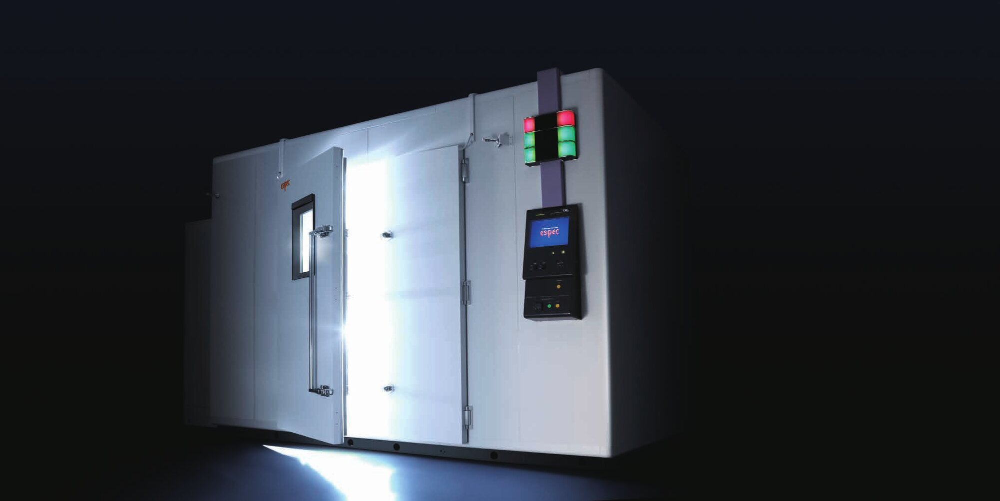

인사말
초안: 대표이사 확인 전 문구
1981년 문을 연 뒤로 저희는 ESPEC 환경시험 장비를 국내에 공급하며, 주요 핵심 산업과 부품소재 산업이 커 가는 길을 함께 걸어 왔습니다.
일본 ESPEC의 국내 단독 대리점으로서 기술 협력과 정기 연수로 쌓은 노하우를 고객의 시험 현장에 그대로 전하겠습니다.
좋은 품질의 제품, 앞선 기술, 만족스러운 서비스로 보답하겠습니다.
대표이사 정창현
45년 연혁
1980s
- 1981
- 제이에스 엔지니어링 설립
- 1981
- TABAI MANUFACTURING Co., Ltd(현 ESPEC) 한국 총판 대리점 계약
- 1981
- SHINKEN Co., Ltd 한국 대리점 계약
- 1989
- 제이에스 서비스 상사 설립
1990s
- 1991
- 법인 전환, 제이에스 서비스 본사 통합
- 1991
- 갑류 무역업 등록
- 1991
- 충남 아산시 공장 준공
- 1994
- 일본 Tabai Espec Corp.와 항온기 기술 제휴
- 1995
- 공장 증축 준공
- 1995
- 광주사무소 개설
- 1998
- ISO 인증 획득
2000s
- 2001
- 창립 20주년
- 2003
- 국세청 지정 성실 납세 업체 지정
- 2008
- 서울 사무소 삼성동 사옥 이전
2010s
- 2011
- 창립 30주년
- 2014
- 제이에스 기술 연구소 설립(본사 공장)
- 2015
- 제이에스 위탁 시험소 개설(본사 공장)
- 2016
- 제이에스 서비스 기술 연구소 설립(서울 사무소)
2020s
- 2021
- 창립 40주년 기념식
- 2026
- 창립 45주년
글자를 읽기 어려웠던 일부 항목(1995, 1999, 2003, 2004년 중 일부)은 [확인 필요]로 남겨 두고 싣지 않았습니다.
ESPEC 단독 총대리점
- 정기 방문
매년 ESPEC 기술진이 찾아옵니다
A/S 기술 협력과 기술 이전을 함께 합니다.
- 연수
직원이 일본에서 배웁니다
정기적인 일본 연수 교육을 받습니다.
- 전시회
국내외 전시회에 나갑니다
SEMICON SHOW, KPCA, JPCA 등.
- 세미나
매년 3~4회 열립니다
ESPEC 연구진이 국내에서 하는 세미나와 기술 강연회.

1981년 TABAI MANUFACTURING(현 ESPEC) 총판 대리점 계약으로 시작해, 1994년 항온기 기술 제휴까지 ESPEC과 함께해 왔습니다.
함께하는 곳
협력사
ESPECSHINKENESPEC KOREA
거래 대기업
SAMSUNGLGDOOSANSKHYUNDAIHANWHA
거래 시험기관
SGSKTLDTNCKTRKCL
회사 이름만 적었습니다. 로고 게시와 공개 가능한 납품 실적은 각 회사 확인 후 [확인 필요].
오시는 길
연락처
주소 [확인 필요]
전화 [확인 필요]
이메일 [확인 필요]
알려진 사업장 (연혁 기준, 현재 상태 [확인 필요])
충남 아산시 공장(1991 준공), 서울 사무소 삼성동(2008 이전), 광주사무소(1995 개설)
지도 들어갈 자리